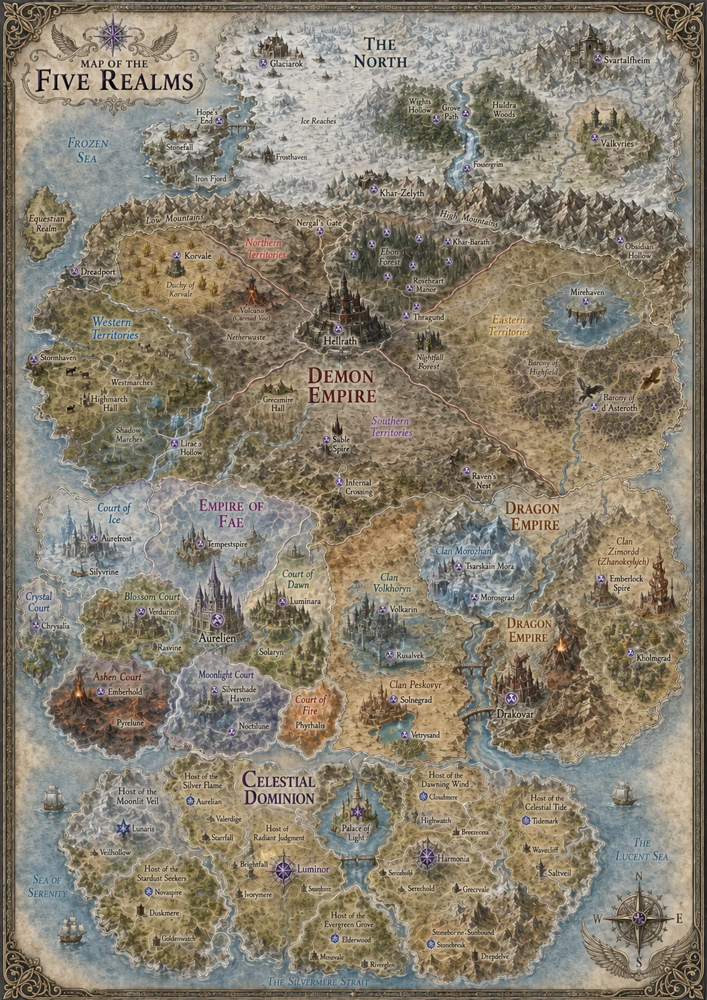

COMPLETE SERIES REFERENCE · FULL SPOILERS
POLITICAL REALMS OF FAIRYLAND
Every border has a history. Every court has teeth.
The political geography of Fairyland is divided among empires, Courts, clans, Hosts and independent northern peoples. Each realm below now links directly to its Traveller's Guide.
REALMS & POLITICS
Political Realms

Demon Empire
The Demon Empire is vast, old and geographically varied, stretching from northern mountain gateways and volcanic frontier lands to western ports, agricultural duchies, eastern magical centres and the southern three-Empire hinge at Infernal Crossing.
Its territory is conventionally divided into Northern, Western, Southern and Eastern Territories, with Hellrath near their meeting point. Great duchies, marches, baronies, House lands and semi-lawless regions retain strong local identities beneath Imperial rule.
Key political geography: Hellrath; the Duchy of Korvale; the Marches of Bowmont, Rhylas and Vellanor; the Baronies of Highfield and d'Asteroth; the Shadow Marches; the Charred Vale and Outlying Expanse; Roseheart lands and Ebon; Infernal Crossing.
Dragon Empire
The Dragon Empire lies east of the Fae Empire and southeast of the Demon Empire. It is an imperial clan civilisation whose landscapes, elemental affinities, architecture, industries and cultures developed together around five great Dragon Clans.
The Emperor rules the whole, while the great clans retain major regional, military and political authority. The five dominant clans are Peskovyr (Sand Dragons), Zharokrylykh (Summer Dragons), Volkhoryn (Sorcerer Dragons), Morozhane (Frost Dragons) and Krasogor (Mountain Dragons).
Imperial policy is shaped by two advisory chambers: the Clan Heads and the magical Circle of Eight, led by First Dragon Wizard Grand Magister Kasimir Luthien.
Empire of Fae
The Fae Empire is a federation of magical Courts gathered beneath one imperial crown. Geography, politics and magic are intertwined so strongly that crossing between Court provinces can mean moving from glaciers to perpetual blossom, volcanic woodland, eternal twilight or floating islands in a living storm.
Six Major Courts possess provinces of their own: Ice, Moonlight, Blossom, Ashen, Dawn and Storm. Numerous Minor Courts, including Musical, Crystal, Echoes, Perfume and Moonlit, exist without independent provinces and form alliances with stronger Courts, Houses or patrons.
The imperial crown is not hereditary. A candidate requires the favour of at least half of the six Major Courts. Each Major Court keeps its own monarch, government, traditions, laws and political interests beneath the Emperor.
The North
The current Political Realms reference presents the North primarily as a dedicated map guide. The North lies beyond the great mountain systems north of the Demon Empire and contains distinct peoples and territories rather than a single conventional empire.
Its established peoples and centres include Vikings, Valkyries, Frost Giants, Drow and Frost Dwarves, alongside old northern beings and the ancient political presence of the North itself.
Celestial Dominion
The Celestial Dominion is a vast terrestrial realm south of the Fae and Dragon Empires, bounded by the Sea of Serenity, Lucent Sea and Silvermere Strait. It is divided into nine Hosts: two Major Hosts and seven Minor Hosts.
The two Major Hosts are Radiant Judgment, centred on Luminor and associated with law and institutional authority, and Eternal Harmony, centred on Harmonia and associated with unity, balance and political moderation.
The seven Minor Hosts are Silver Flame, Dawning Wind, Moonlit Veil, Celestial Tide, Stardust Seekers, Evergreen Grove and Stonebound Sentinel. The Palace of Light stands on neutral ground between the two Major Hosts.
Equestrian Territories
The Political Realms parent page also records the Pegasus Realm and Unicorn Realm under Equestrian Territories. They are listed there as realm entries rather than separate child pages at present.
HOUSES, COURTS & CLANS
Houses, Courts & Clans
The complete canon structure currently recorded in the Fairyland Wiki.
Demon Houses
No additional entries are currently recorded in the Notion canon.
Fae Courts
Realm: Fae Empire
Political structure: The Fae Empire is a federation of magical Courts under one imperial crown. Each Major Court has its own monarch, government, traditions, laws, magical specialisations and political interests. The Emperor or Empress stands above the Courts in matters affecting the Empire as a whole but does not replace their individual governments.
Imperial succession: The imperial crown is not hereditary. A candidate needs the favour of at least half of the six Major Courts before taking the imperial throne.
Court hierarchy: Six Major Courts possess territorial provinces of their own. Minor Courts do not possess provinces and are generally governed by titled nobles; many align themselves politically with a Major Court, House or other patron.
Six Major Courts
The Ashen Court
King: Korrad Cinderflare
Consort: Ashara
Heir: Prince Ignisar
Themes: Fire, chaos, transformation, destruction and renewal
Capital: Emberhall
Province: Charred forests, eternally glowing embers and slowly flowing rivers of lava. Ash falls through the region like snow, blackened trees stand against fiery horizons and heat is woven directly into the land's magic.
Philosophy / culture: Ashen philosophy centres on transformation through destruction. Fire is understood not only as something that consumes, but as something that clears, changes, releases and makes space for what follows.
Relations: Philosophically linked to the Blossom Court through their shared belief in renewal, despite very different methods. Politically influential, with longstanding relationships with the Ice Court and Franziska.
Best known for: Fire magic, volcanic landscapes, transformation, metallurgy and a cultural tolerance for dramatic solutions.
Traveller's advice: “It will grow back” is not necessarily reassurance when spoken by an Ashen Fae holding a torch.
The Blossom Court
Current Queen: Avelina Petalbright
Themes: Life, growth, healing, renewal and natural cycles
Capital: Verdanthall
Province: Ever-blooming meadows surrounded by ancient trees, where flowers can change colour with the seasons and magic permeates the living environment.
Magic / philosophy: Magic centres on growth, healing and plant life. Blossom tradition emphasises natural cycles: growth, death, decay and eventual renewal.
Resources: Living materials, medicinal plants, pigments, cultivated magical flora and other natural resources.
Relations: Historically complicated relationship with the Ashen Court. Both believe in renewal, but Blossom tends toward nurture while Ashen accepts destruction as part of the process. Dawn exchanges inspiration and magical creations with Blossom in return for pigments and living materials.
Best known for: Gardens, healing, magical flora, botanical resources and landscapes in permanent bloom.
Traveller's advice: Do not assume that the beautiful flower beside the path is harmless merely because it smiled at you first.
The Court of Dawn
King: Solar
Capital: Luminara
Royal Palace: Palace of Auroralei
Themes: Beauty, art, invention, renewal, illusion and enchantment
Province / capital character: The Court sits in the heart of the Fae Empire. Luminara is approached along broad marble avenues that appear dusted with starlight. The Palace of Auroralei intertwines architecture and illusion; towers shimmer like frozen flames, walls respond to the changing sky and enchantments can make the palace seem almost alive.
Culture / magic: Dawn places extraordinary value on artistic originality, spectacle, beauty and experimentation. Its illusions can manipulate perception profoundly enough that visitors are advised to have an anchor capable of reminding them of their own identity.
Notable feature: Beneath the palace was sealed the ancient Tempest Core, an immensely dangerous magical artefact connected to the Storm Court and one cause of longstanding political tension.
Relations: Fond but competitive relationship with Blossom. Historically traded with Moonlight for rare dreams and memories used in enchantments.
Best known for: Art, illusion, invention, living architecture, fashion, enchantment and spectacular bad ideas.
History:
The Dawn Usurpation
Year of the Fractured Light — last open clash of the Fae Courts before the Great Accord
The Crimson War / The Empyrean Conflicts
50 years ago: The Crimson War ends — Crimson Accords signed
Traveller's advice: If something in Luminara is impossibly beautiful, verify that it exists before purchasing it.
The Ice Court
Current King: Aurelian Frostfey
Heir: Eryndor Frostfey
Imperial affiliation: Court of the current Emperor
Themes: Ice, winter, precision, restraint and endurance
Capital: Aurefrost
Province / architecture: A realm of snow, glaciers, crystalline architecture and highly controlled magic. Aurefrost contains pale blue towers resembling carved glaciers, snow-covered streets and floating crystal lanterns. The royal palace includes transparent ice and crystal, frostfire and moving auroras.
Culture / magic: Restraint, precision, formality and control are highly valued. Ice magic is both defensive and constructive, and the Court can use ice as a permanent structural material rather than merely frozen water.
Best known for: Glacial architecture, winter magic, royal ceremony, crystalline craftsmanship and formidable composure.
Permanent portal: Dedicated portal station in the capital, housed in a pale, ice-like building with enchanted frost windows and medical facilities.
Traveller's advice: Complaining that the palace is cold will probably result in someone politely proving that it technically is not.
The Moonlight Court
Current Queen: Aine
Capital: Silvershade Haven
Themes: Moonlight, reflection, memory, dreams, stillness and secrecy
Province: Exists beneath an eternal twilight sky. Silvershade Haven glows in blue, silver and moon-white, with rooftops dusted in soft luminescence as though permanently touched by moonlight.
Culture / magic: Traditionally places great importance on memory, reflection, continuity and preservation of the past. This can make the Court resistant to rapid change when outsiders disturb established customs or institutions.
Notable landmark: The Luminarium of Veils, an ancient marble-and-moonstone observatory on the city's highest terrace, now converted into the Court's permanent portal hub. A monumental statue of the Night Bloom Stag serves as the heartstone anchor for the portal.
Best known for: Eternal twilight, lunar magic, dreams, memory, divination, secrecy and spectacular night architecture.
Traveller's advice: Something being old is not an argument against keeping it in the Moonlight Court. It may be the principal argument in its favour.
The Storm Court
King: Tempestus Galeheart
Queen: Tempra Varasyn
Capital: Tempestspire
Permanent Portal: Skybreaker Reach
Themes: Tempest, freedom, wind, rain and raw elemental power
Province: Floating islands suspended among permanent thunderclouds, where stormglass towers rise from drifting landmasses and bridges of lightning form and vanish between them. Travel can involve solidified mist causeways, flight and magically sustained bridges rather than conventional roads.
Culture / magic: Strongly values freedom, movement and independence. Its magic commands wind, rain, lightning and atmospheric forces.
Relations: Traditionally playful relationship with the Musical Court and a more strained relationship with the highly ordered Crystal Court.
Best known for: Floating islands, impossible views, storms, lightning architecture and some of the most dramatic travel conditions in Fairyland.
Traveller's advice: If the bridge disappears while you are crossing it, screaming is unlikely to improve its structural integrity.
Minor Courts
Status: Genuine political and cultural entities without territorial provinces of their own. Many pledge themselves to a stronger Court, House or other political patron.
The Crystal Court
Identity: Order, precision and clarity
Capital: Chrysalis
Principal seat: A radiant palace carved into a colossal crystal mountain, where refracted light fills the surroundings with shifting rainbows.
Magic / culture: Magical traditions focus on crystal and light manipulation. Culture values discipline, structure, craftsmanship and perfection.
Relations: Its preference for predictability and carefully ordered systems helps explain recurring friction with the freer Storm and Musical Courts.
Best known for: Crystal magic, precision craft, architecture and things being exactly where someone decided they belong.
Court of Echoes
Identity: Fae of resonance, memory and repetition.
Magic: Sound that is not music, voices that are not speech and reflections that are not visual, distinguishing the Court from the Musical and Crystal Courts.
Associated motifs: Reverberation caverns, spoken promises that linger and echo-spirits that mimic truths or lies.
Ruler: Described as a Resonant Monarch or Queen of Returning Words.
Capital: Resonara, a cavernous crystalline metropolis where every word lingers and every step sings.
Specialisation: Echo magic governs repetition, memory and reverberation, distinct from the Musical Court's intentional sound.
The Moonlit Court
Status: Small Scion Court historically connected to the Moonlight Court but possessing a distinct identity of its own.
Matron Head: Noctyralyn “Nocty”
Known members in People: Noctyralyn “Nocty”, Chrysalyn, Pyralyn.
Court size: A little over one hundred people when households and entourages are counted.
Political alignment: Places itself under the protection of House Roseheart rather than functioning as an independent territorial power. At Aine's coronation, the Moonlight Queen acknowledges the Moonlit Court as her Court's Scion Court.
Location: Thragund, a village in Roseheart Forest in the Demon Empire.
Best known for: Poisons, Moonlit magic and its close relationship with House Roseheart.
The Musical Court
Status: Itinerant Minor Court that has deliberately avoided settling permanently under any single Major Court.
Estates: Maintains estates in all six Major Courts, giving its members permanent homes and bases throughout the Empire without a province of their own.
Culture / politics: Unusually well connected; Musical Court families can move between different political circles and often maintain relationships throughout the Fae Empire.
Known noble: Lord Perran.
Best known for: Music, performance, travel and connections spanning all six Major Courts.
Traveller's advice: Asking where the Musical Court is based is likely to produce the answer, “At the moment?”
The Perfume Court
Identity: Fae of fragrance, allure and emotional influence.
Magic: Scent-magic, memory tied to aroma and the ephemeral beauty of blooming air.
Distinctions: Separate from Blossom because Perfume governs what flowers release rather than the flowers themselves. The source also distinguishes it from Thorn by describing Perfume magic as seduction rather than defence.
Associated themes: Enchanted perfumes, aromatic illusions and emotional resonance carried on scent.
Dragon Clans
No additional entries are currently recorded in the Notion canon.
Other Houses, Clans & Lineages
No additional entries are currently recorded in the Notion canon.